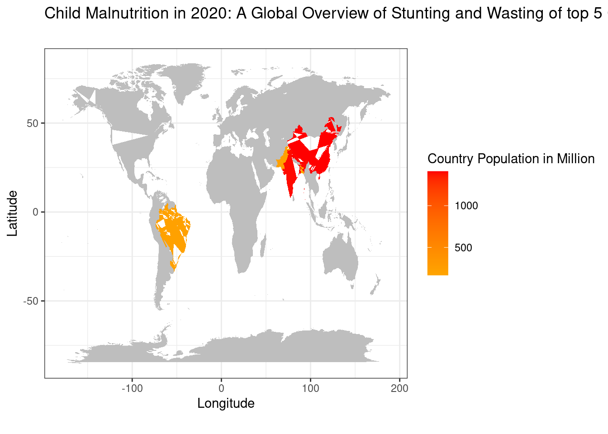
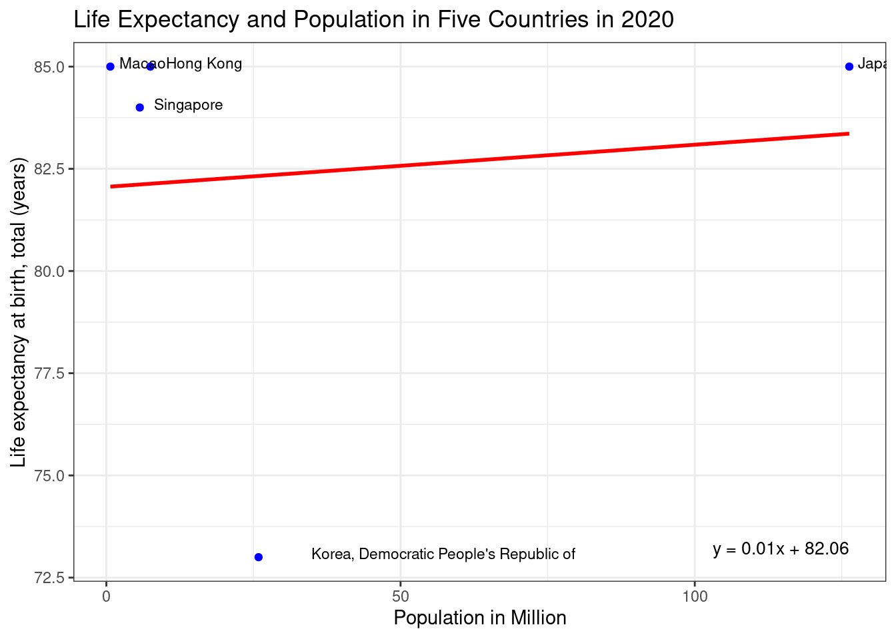
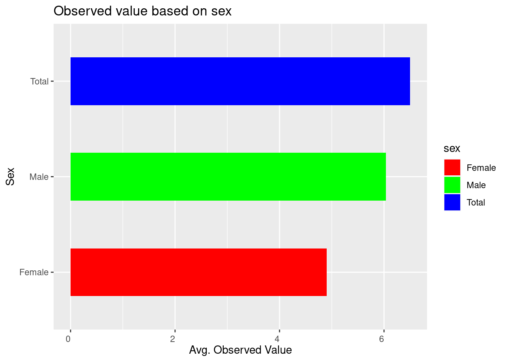
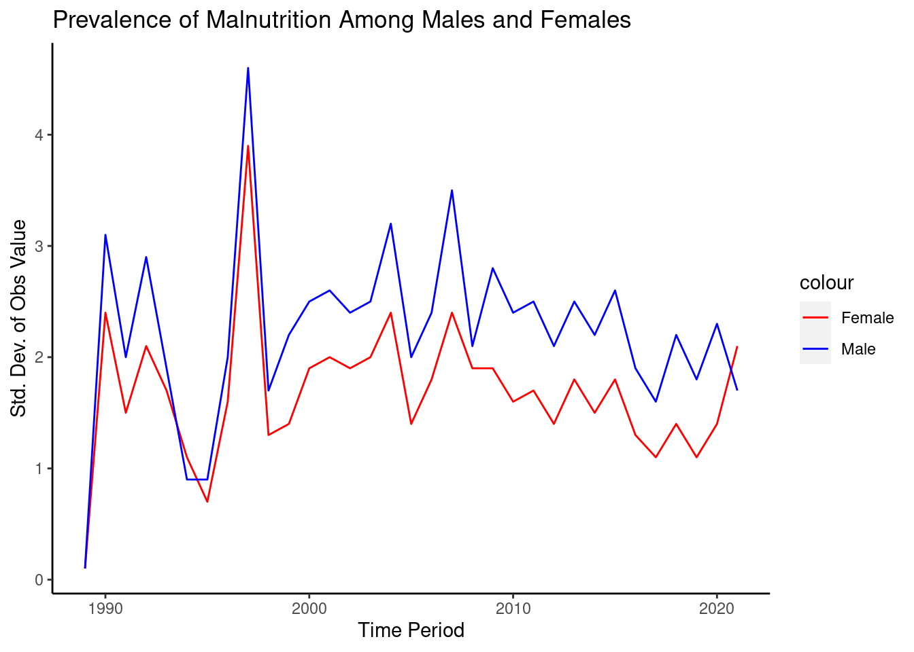

Malnutrition and Health Indicators Across Time and Population
Indicators of Nutritional Status in Five Countries in 2020
The populations and height-for-age and weight-for-height metrics for five nations in 2020. Children in Bangladesh, India, and Pakistan have poor height-for-age and weight-for-height ratios, indicating a large burden of malnutrition. Malnutrition burdens are lower in Brazil and China.
Life Expectancy and Population in Five Countries in 2020

The population and life expectancy of five nations in 2020: Hong Kong, Japan, North Korea, Macao, and Singapore. The average life expectancy of Japan, Hong Kong, and Macao was 85 years, whereas Singapore had a slightly lower life expectancy of 84 years. With a life expectancy of 73 years, North Korea was the lowest. Japan had the most people, while Singapore and Macao had the fewest.
Male and Female Prevalence of Low Height-for-Age and Weight-for-Height

The frequency of low height-for-age and low weight-for-height in girls and boys with a -2SD cutoff. Males have a larger prevalence of low values (2.356%) than females (1.328%), for a total prevalence of 1.828% in both sexes. Malnutrition is indicated by low height-for-age and weight-for-height, which can result in unfavorable health consequences and impaired cognitive development.
Malnutrition Rates in Children from 1986 to 2021

From 1986 to 2021, the table displays the percentage of girls and men with a height-for-age less than -2 standard deviations and a weight-for-height less than -2 SD. This disorder affected 61.1% of females and 58.6% of men in 1988, but only 1.365% of females and 1.699% of males in 2020.